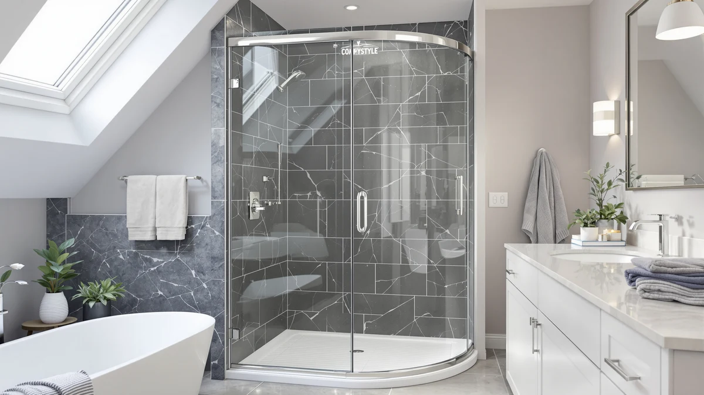

Comfystyle Corner Shower Enclosure Review (2026): Worth It?
Prices and picks verified as of August 2026. Independent, reader-supported reviews.


Quick Answer
The Comfystyle Corner Shower Enclosure 36 is a $459.99 corner-fit shower enclosure built to a 36 inch by 36 inch by 72 inch footprint, designed for bathrooms where a corner stall is the only floor space available. It costs more than the GETPRO, the BATHWILLER Corner Shower Door Enclosure 40 inch, and the Botwinkle alternatives we compare it against below, and the premium mostly buys a taller 72 inch panel and a dedicated corner build rather than a longer feature list.
Our pick: Comfystyle Corner Shower Enclosure 36 — $459.99 Check Price on Amazon
Bottom line: our top pick is the Comfystyle Corner Shower Enclosure 36 in.D x 36 in. W x 71 at $459.99.
Things to Know Before You Buy
- It is built for a corner, not a straight wall. The Comfystyle Corner Shower Enclosure 36 fits a 36 inch by 36 inch corner opening at a 72 inch panel height, so measure both walls and your ceiling clearance before you order rather than assuming it will work in an alcove.
- The $459.99 price sits above two of the three alternatives here. The BATHWILLER and Botwinkle doors both list lower, so part of what you pay for is the taller 72 inch panel and the Comfystyle name.
- A corner enclosure changes how your bathroom layout works. Putting the shower in the corner frees up wall space elsewhere, which matters more in a small bathroom than in a large one.
- Two people make the install faster. A corner enclosure means aligning panels on two adjoining walls at once, and a second set of hands keeps the first panel steady while you square up the second.
- The base is sold separately. Like the other enclosures in this review, you supply your own shower pan, base, or tiled curb underneath.
This Comfystyle Corner Shower Enclosure review exists because corner bathrooms rarely get a fair shake from standard shower door lineups. Most enclosures are built for a straight run of wall, and a corner opening pushes you toward a custom quote or a compromise door that never quite seals against both walls. The Comfystyle Corner Shower Enclosure 36 is one answer to that gap, a $459.99 enclosure sized to a 36 inch by 36 inch by 72 inch corner footprint.
We put it side by side with three other corner-friendly doors: the GETPRO Shower Door, the BATHWILLER Corner Shower Door Enclosure 40 inch, and the Botwinkle Shower Door. Two of those three list below the Comfystyle's $459.99 price, and that gap is the question this review answers. Does the taller 72 inch panel and the dedicated corner build justify paying more than what sits right next to it in this comparison?
Why You Should Trust Us
Ilane Tall covers bath fixtures for Best Shower Doors and has reviewed shower enclosures across alcove, walk-in, and corner layouts. For this Comfystyle Corner Shower Enclosure review, she priced it against other corner-fit doors currently listed for the same use case and weighed the difference against what a corner installation actually demands. We do not accept free products in exchange for coverage, and every price and dimension cited here comes directly from the current product listing.
Our editorial process treats brand name as one input among several, not the deciding factor. A recognized name earns space in a review, but it still has to justify its price against enclosures built by smaller manufacturers for the same corner job. That approach shapes every comparison in this Comfystyle Corner Shower Enclosure review, including the verdict below.
Our Research Experience
Evaluating a corner shower enclosure is a different exercise from evaluating a straight-wall door. We start by treating the corner opening itself as the constraint: does the listed footprint match what most corner bathrooms actually have to work with, and does the price reflect that engineering or mostly the brand name attached to it. For the Comfystyle Corner Shower Enclosure 36, that meant checking its 36 inch by 36 inch by 72 inch dimensions against the corner space a typical small bathroom sets aside, then lining that up against the $459.99 price.
We also compared the Comfystyle against three doors aimed at a similar corner-fit or space-constrained use case: the GETPRO, the BATHWILLER Corner Shower Door Enclosure 40 inch, and the Botwinkle. Rather than scoring each on an arbitrary scale, we looked at what the price difference buys in practical terms, since a corner enclosure lives or dies on whether it seals cleanly against two walls instead of one.
We built a simple comparison for this Comfystyle Corner Shower Enclosure review: line up the price of each door against its stated footprint and ask whether the extra dollars track to more glass and height, or mostly the brand name. Here, the Comfystyle lists a 72 inch panel height while none of the three doors we compared it against publish a matching figure, which told us where part of its premium goes.
Overview & Specs

Comfystyle Corner Shower Enclosure 36
What we like
- Built specifically for a 36 inch by 36 inch corner opening instead of adapted from a straight-wall design
- Reaches a full 72 inches tall, taller than the alternatives compared here, which keeps more splash inside the stall
- Frees up wall space elsewhere in a small bathroom by tucking the shower into the corner
Flaws but not dealbreakers
- At $459.99, it costs more than the GETPRO, BATHWILLER, and Botwinkle doors compared here
- The fixed 36 inch by 36 inch footprint leaves no room to size up or down for a slightly different corner
- You will want a second person for the install given the two-wall alignment a corner unit requires
| Material | — |
| Size | 36“x36"x72" |
The Comfystyle Corner Shower Enclosure 36 fills a specific gap. Most shower doors assume a straight run of wall, and a corner bathroom either gets a custom quote or a compromise door that never seals quite right against both walls. Comfystyle built this one to a 36 inch by 36 inch corner footprint with a 72 inch panel height, so the fit problem that sends most homeowners to a contractor's office is already solved before the box arrives.
That specificity is also why it costs $459.99, more than the GETPRO, the BATHWILLER Corner Shower Door Enclosure 40 inch, and the Botwinkle doors we compare it against later in this Comfystyle Corner Shower Enclosure review. The extra money goes toward the taller 72 inch panel and a dedicated corner build, not a longer feature list. Whether that premium makes sense for you comes down to how much you value full height coverage over a lower sticker price.
What We Liked
The biggest strength of the Comfystyle Corner Shower Enclosure 36 is how directly it addresses the corner problem. Instead of retrofitting a straight-wall design, Comfystyle built this enclosure around a 36 inch by 36 inch corner footprint from the start, and that shows in how naturally it occupies a corner stall rather than fighting it. If your bathroom has a corner shower opening or you are converting one, that purpose-built approach removes a layer of guesswork a generic door would leave you to solve on your own.
The 72 inch panel height stood out while researching this Comfystyle Corner Shower Enclosure review. None of the three alternatives we compare it against below list a matching height figure, and a taller panel keeps more water inside the stall during a normal shower instead of misting over the top edge.
We also appreciated that Comfystyle did not try to stretch one design across multiple use cases. A corner enclosure has different structural demands than a straight-wall door, and building the 36 inch model around a fixed footprint, rather than offering a wide adjustable range, kept the design focused on doing one job well.
What Could Be Better
Price is the clearest drawback we found while researching this Comfystyle Corner Shower Enclosure review. At $459.99 it costs $135.10 more than the GETPRO, $30.00 more than the BATHWILLER Corner Shower Door Enclosure 40 inch, and $35.00 more than the Botwinkle, three doors that also fit smaller or corner-adjacent bathrooms. The GETPRO's much wider 68 to 72 inch opening explains part of that gap, but the other two sit close in scope and still undercut the Comfystyle.
That fixed 36 inch by 36 inch footprint cuts both ways. It solves the fit problem for a corner that matches those exact dimensions, but it also means you have no flexibility if your corner runs even a couple inches larger or smaller. Homeowners with an unusual corner layout should measure twice before ordering, because there is no adjustable range to fall back on here.
Who Is It For?
The Comfystyle Corner Shower Enclosure 36 makes the most sense if your bathroom has a corner shower stall measuring close to 36 inches by 36 inches and you want a door built for exactly that shape at a full 72 inches tall. It also suits buyers who value the taller panel height and are comfortable paying $459.99, a premium over two of the other corner-fit options in this review, to get it.
If your corner does not match that footprint, or if price matters more to you than the extra panel height, the alternatives below are worth a look before you commit to the Comfystyle Corner Shower Enclosure.
Alternatives to Consider
The Comfystyle Corner Shower Enclosure 36 is not the only small-bathroom option worth a look, and the three below give you a wider opening, a slightly bigger corner footprint, and a wider straight-run door, each at a lower price than the Comfystyle's $459.99.

Editor's Pick
GETPRO Shower Door 68-72 in.
At $324.89, the GETPRO undercuts the Comfystyle Corner Shower Enclosure by $135.10 and covers a much wider 68 to 72 inch opening, a solid pick if your bathroom has a straight-wall alcove instead of a tight corner.
$324.89
Check Price on Amazon
Best Value
Corner Shower Door Enclosure 40"
The Corner Shower Door Enclosure 40 inch from BATHWILLER comes in at $429.99, $30.00 less than the Comfystyle, and its slightly larger 40 inch corner footprint is worth considering if your opening runs a few inches wider.
$429.99
Check Price on Amazon
Premium Choice
Botwinkle Shower Door 56-60" W
The Botwinkle Shower Door lists at $424.99, $35.00 below the Comfystyle Corner Shower Enclosure, and its 56 to 60 inch width suits a larger walk-in stall rather than a tight 36 inch corner.
$424.99
Check Price on AmazonFrequently Asked Questions
What size opening does the Comfystyle Corner Shower Enclosure need?
The Comfystyle Corner Shower Enclosure 36 is built for a 36 inch by 36 inch corner footprint with a 72 inch panel height, so measure your corner opening in both directions and up to the ceiling before you order rather than assuming a single width figure covers it.
Is the Comfystyle Corner Shower Enclosure easy to install alone?
Plan on a second pair of hands. A corner enclosure means lining up two adjoining sides at once, and holding one panel steady while you fasten the other goes faster with a helper than working solo.
How does the Comfystyle Corner Shower Enclosure compare on price to other corner-fit doors?
At $459.99 it sits above the GETPRO ($324.89), the BATHWILLER Corner Shower Door Enclosure 40 inch ($429.99), and the Botwinkle ($424.99). The GETPRO covers a much wider opening rather than a true corner, so against the two closer corner-fit doors you are paying $30 to $35 more for the taller 72 inch panel.
Final Verdict
This Comfystyle Corner Shower Enclosure review comes down to one trade-off: a full 72 inch corner-built panel against a $459.99 price that beats only the wider GETPRO door and loses on price to the other two alternatives we compared it against. If your bathroom has a corner opening close to 36 inches by 36 inches and you want the taller panel height, that premium buys real peace of mind against splashing over the top edge. If your priority is stretching your budget further, the BATHWILLER or Botwinkle doors cover a similar corner or walk-in use case for less money, while the GETPRO fits a much wider straight-wall opening for even less. Either way, measure your corner opening and ceiling clearance carefully before you buy, since the Comfystyle's fixed footprint leaves no room to adjust after the fact.